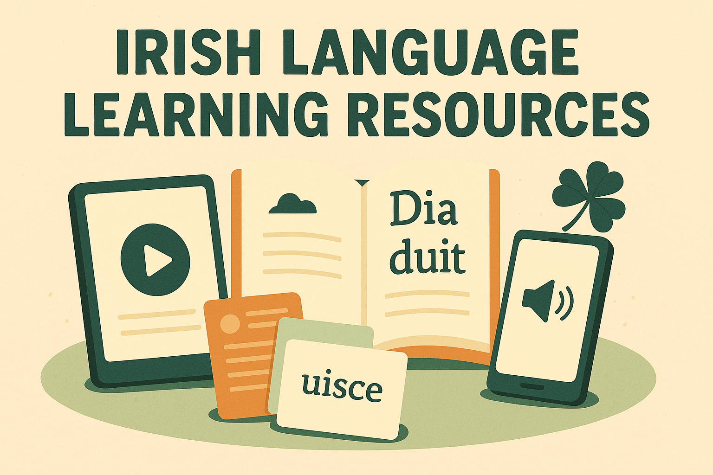
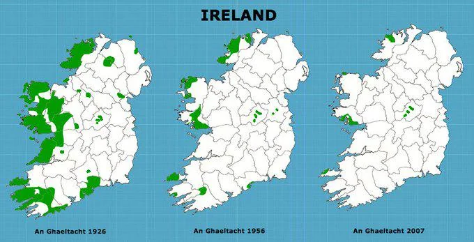

Ireland's linguistic landscape is shaped by a rich interplay between its ancient Celtic heritage and the more recent influence of English, resulting in a cultural identity where language simultaneously preserves the past and adapts to modern life. The island's first and most historically significant language is Irish (Gaeilge), one of the oldest written languages in Europe and one of the few surviving Celtic tongues. Irish evolved over more than two thousand years, developing its own grammar, sounds, and poetic traditions. For centuries it was the primary language of the population, spoken in every region of the island and used in storytelling, law, religion, and daily life. The arrival of English rule from the late medieval period onward, along with famine, emigration, and economic hardship, led to a steep decline in Irish speakers by the 19th century. However, the Irish literary revival of the late 1800s and the establishment of the Irish Free State in the 20th century ignited major efforts to preserve and promote the language. Today, Irish is an official language of the Republic of Ireland and holds significant cultural importance.
Irish Language
Gaelic

Modern Language
While only a minority speak Irish as their first language, the language is a central part of national identity and is taught in schools nationwide. Regions known as the Gaeltacht—mostly in counties Donegal, Mayo, Galway, Kerry, and Cork—are areas where Irish remains the dominant community language. These regions receive government support to maintain the linguistic tradition, and they play a crucial role in keeping natural, intergenerational Irish speech alive. Beyond these areas, Irish appears in road signs, public documents, TV and radio broadcasts, and cultural events. Many Irish people who do not speak the language fluently still value it deeply, often using common Irish words or phrases in everyday English speech. For example, “craic” refers to fun or entertainment, “sláinte” is used when making a toast, and expressions like “grand,” “aye,” or “sure look” reflect Irish patterns of speech even when spoken in English.
